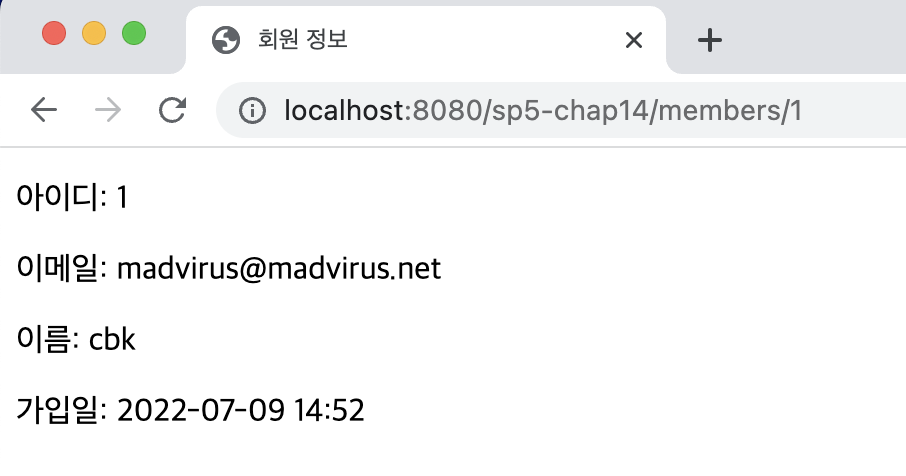

<meta charset="utf-8">
<html lang="ko">
<head>
    <link rel="stylesheet" type="text/css" href="./../style.css" />
    <title>Ch14. MVC 4 : @PathVariable</title>
</head>
<body id="tt-body-page" class="">
<div id="wrap" class="wrap-right">
    <div id="container">
        <main class="main ">
            <div class="area-main">
                <div class="area-view">
                    <div class="article-header">
                        <div class="inner-article-header">
                            <div class="box-meta">
                                <h2 class="title-article">Ch14. MVC 4 : @PathVariable</h2>
                                <div class="box-info">
                                    <p class="category">Web</p>
                                    <p class="date">2022-07-26 15:12:33</p>
                                </div>
                            </div>
                        </div>
                    </div>
                    <hr>
                    <div class="article-view">
                        <div class="contents_style">
                            <p data-ke-size="size16">경로의 일부가 고정되어 있지 않고 달라질때 매핑 메서드에서 이를 어떻게 처리 할수 있을까?</p>
<p data-ke-size="size16">&nbsp;</p>
<p data-ke-size="size16">예를들어 다음 url을 보자.</p>
<pre id="code_1658815183078" class="java" data-ke-language="java" data-ke-type="codeblock"><code>http://localhost:8080/sp5-chap14/members/10</code></pre>
<p data-ke-size="size16">마지막에 10이 멤버의 번호를 나타내고 각 맴버 경로마다 해당 숫자가 달라진다고 하면, 컨트롤러에서 해당 하는 번호를 어떻게 처리할수 있을까?</p>
<p data-ke-size="size16">&nbsp;</p>
<p data-ke-size="size16">&nbsp;</p>
<p data-ke-size="size16"><b>MemberDetailController.java</b></p>
<pre id="code_1658815274220" class="java" data-ke-language="java" data-ke-type="codeblock"><code>package spring;

import org.springframework.stereotype.Controller;
import org.springframework.ui.Model;
import org.springframework.web.bind.annotation.GetMapping;
import org.springframework.web.bind.annotation.PathVariable;

@Controller
public class MemberDetailController 
{
	private MemberDao memberDao;
	
	public void setMemberDao(MemberDao memberDao)
	{
		this.memberDao = memberDao;
	}
	
	@GetMapping("/members/{id}")
	public String detail(@PathVariable("id") Long memId, Model model) 
	{
		Member member = memberDao.selectById(memId);
		if(member == null) throw new MemberNotFoundException();
		
		model.addAttribute("member", member);
		return "member/memberDetail";
	}

}</code></pre>
<p data-ke-size="size16">detail() 메서드를 보면 매핑 경로에 중괄호 <b>{id}</b>&nbsp;가 있는데.</p>
<p data-ke-size="size16">이렇게 중괄호로 둘러 쌓인 부분을&nbsp;<b>경로 변수&nbsp;</b>라고 한다.&nbsp;</p>
<p data-ke-size="size16">이 <b>경로 변수에 해당하는 값은 같은 경로 변수 이름을 지정한 @PathVariable 파라미터에 전달된다.&nbsp;</b></p>
<p data-ke-size="size16">&nbsp;</p>
<p data-ke-size="size16">즉 여기서 전달된 <b>요청 경로가 /members/10</b>&nbsp;이라면, <b>경로 변수는 10이 되고, Long memId의 값이 10</b>이 된다.&nbsp;</p>
<p data-ke-size="size16">경로 변수 10은 String 타입이지만, Long memId에 맞춰 타입은 변환된다.&nbsp;</p>
<p data-ke-size="size16">&nbsp;</p>
<p data-ke-size="size16">&nbsp;</p>
<p data-ke-size="size16">MemberDetailController를 빈 객체로 추가하고&nbsp;</p>
<p data-ke-size="size16"><b>ControllerConfig.java</b></p>
<pre id="code_1658815835809" class="java" data-ke-language="java" data-ke-type="codeblock"><code>package config;

// ...

@Configuration 
public class ControllerConfig 
{
	// ...
	// MemberConfig.java에서 빈 객체로 추가됨       
	@Autowired
	private MemberDao memberDao;
    
    // ...
    
	@Bean
	public MemberDetailController memberDetailController() 
	{
		MemberDetailController controller = 
				new MemberDetailController();
		controller.setMemberDao(memberDao);
		return controller;
	}
	
}</code></pre>
<p data-ke-size="size16">&nbsp;</p>
<p data-ke-size="size16">&nbsp;</p>
<p data-ke-size="size16">결과 뷰&nbsp;</p>
<p data-ke-size="size16"><b>memberDetail.jsp&nbsp;</b></p>
<pre id="code_1658815859876" class="java" data-ke-language="java" data-ke-type="codeblock"><code>&lt;%@ page contentType="text/html; charset=utf-8" %&gt;
&lt;%@ taglib prefix="tf" tagdir="/WEB-INF/tags" %&gt;

&lt;!DOCTYPE html&gt;
&lt;html&gt;
&lt;head&gt;
	&lt;title&gt;회원 정보&lt;/title&gt;
&lt;/head&gt;
&lt;body&gt;
	&lt;p&gt;아이디: ${member.id }&lt;/p&gt;
	&lt;p&gt;이메일: ${member.email }&lt;/p&gt;
	&lt;p&gt;이름: ${member.name }&lt;/p&gt;
	&lt;p&gt;가입일: &lt;tf:formatDateTime value="${member.registerDateTime }"
	pattern="yyyy-MM-dd HH:mm" /&gt; &lt;/p&gt;
	
&lt;/body&gt;
&lt;/html&gt;</code></pre>
<p data-ke-size="size16">&nbsp;</p>
<p data-ke-size="size16">&nbsp;</p>
<p data-ke-size="size16"><b>결과</b></p>
<p><figure class="imageblock alignCenter" width="776" height="408" >
    <span data-lightbox="lightbox">
        
    </span>
    <figcaption></figcaption>
</figure></p>
<p data-ke-size="size16">&nbsp;</p>
<p data-ke-size="size16"><span style="background-color: #ffffff; color: #555555;">출처 : 스프링5 프로그래밍 입문 (최범균 저)&nbsp;</span></p>
                        </div>
                        <br/>
                        <div class="tags">
                            #MVC #Spring 
                        </div>
                    </div>
                </div>
            </div>
        </main>
    </div>
</div>
</body>
</html>
